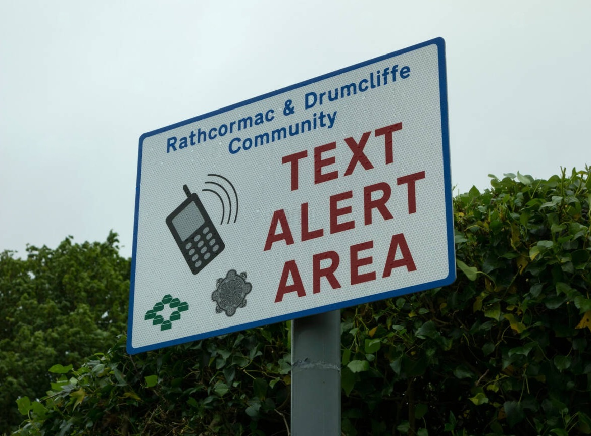

Actions: What Can Be Done
Jump to: Personal · Community · Policy
Personal
While the burden of responsibility lies on the government and An Garda Síochána, there are still actionable steps we can take to minimise risks to our personal safety. We can plan routes home, share our location with a friend or family member, and choose well-lit, busy routes after dark. Equally important is to report any incidents you witness or experience, as unreported crime can't be included in the figures that shape where policing resources are spent. However, these steps merely mitigate risk rather than remove it, and can limit residents' personal freedoms.

Community
Residents can join or start a Neighbourhood Watch, which aims to build relations between the community and An Garda Síochána while increasing public safety. Students can participate in Campus Watch, a programme similar to the Neighbourhood Watch scheme. The Garda Text Alert programme also aids in strengthening links with communities, enabling Gardaí to send one-way alert messages to registered Community Contacts, who forward them to the group. These schemes build local trust at low cost, yet depend on volunteers, and only support policing rather than functioning as a replacement for it.
Policy
Real, permanent change must come from the government and An Garda Síochána themselves, with a focus on recruitment and improved retention. Fine Gael TD Emer Currie has called for a second Garda college based in TUD's Blanchardstown campus, making the profession more accessible to those living in Dublin and the wider Leinster province. She has also requested a report on Garda allocation across Dublin, relative to population and crime rates, which could make distribution fairer. The trade-offs are cost and time, and moving Gardaí to one district can leave another thinner without ample recruitment to supplement. The Assistant Garda Commissioner also noted the limits of visibility's effectiveness, suggesting that it would not alone help to address underlying issues of anti-social behaviour, so continued prevention and community supports matter too.
Together, personal habits, community networks and government policy reinforce each other. The first two help in the short term, but lasting change depends on policy that provides Dublin with enough Gardaí in the right places.